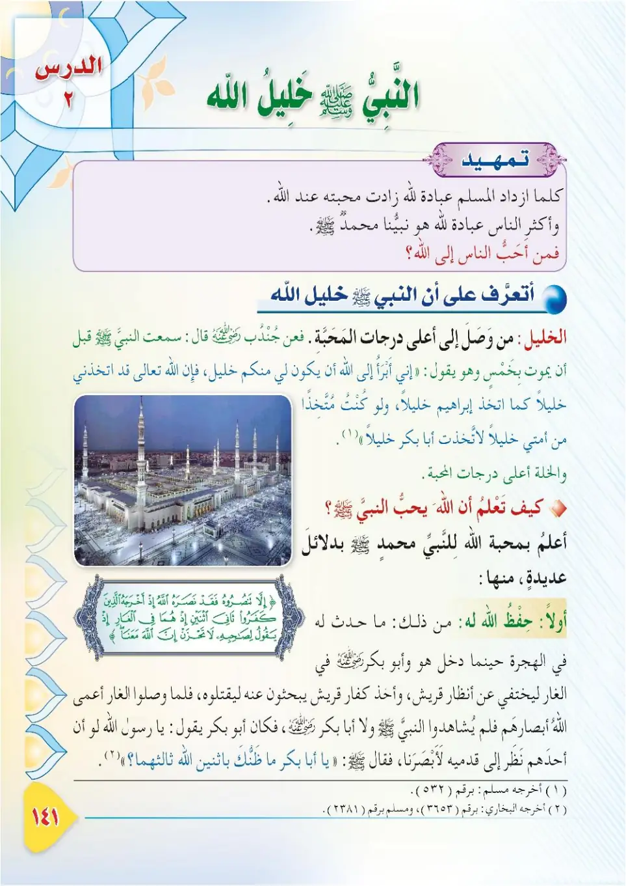
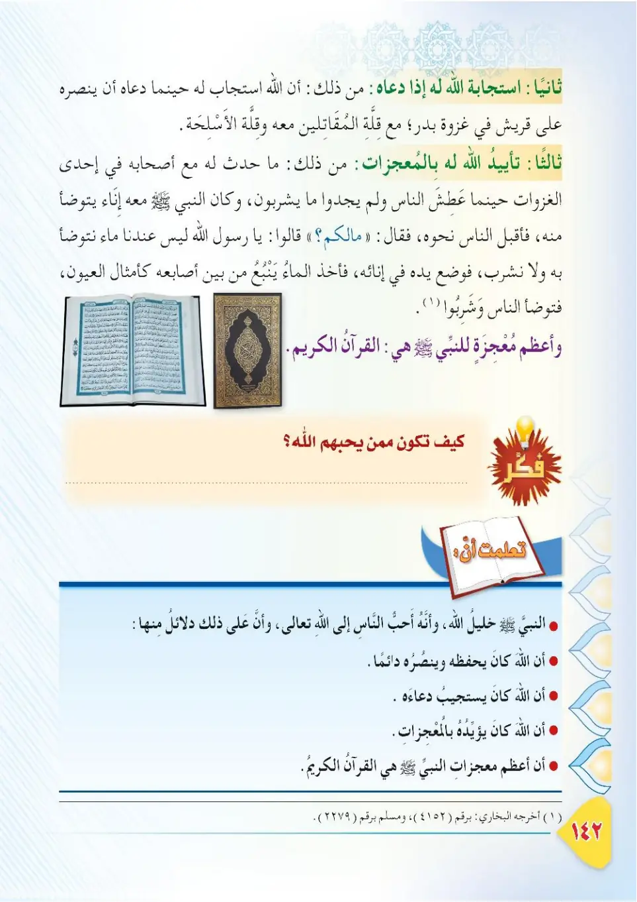
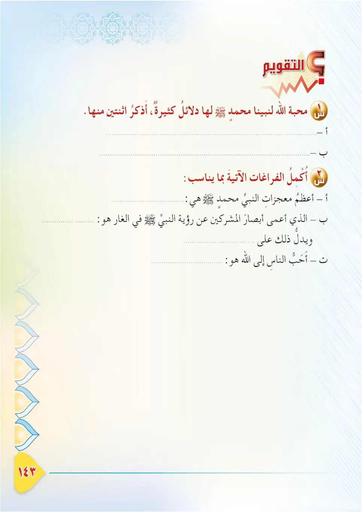

Stage 3·المرحلة الثالثة📖 Unit 3
النَّبِيُّ ﷺ خَلِيلُ اللهِ The Prophet ﷺ, the Khalil (Close Friend) of Allah
From the Textbookpp. 142–144



كُلَّمَا ازْدَادَ الْعَبْدُ عِبَادَةً لِلَّهِ زَادَتْ مَحَبَّتُهُ عِنْدَ اللهِ، وَأَكْثَرُ النَّاسِ عِبَادَةً لِلَّهِ هُوَ نَبِيُّنَا مُحَمَّدٌ ﷺ. فَمَنْ أَحَبُّ الْخَلْقِ إِلَى اللهِ؟ نَتَعَرَّفُ فِي هَذَا الدَّرْسِ عَلَى أَنَّ النَّبِيَّ ﷺ خَلِيلُ اللهِ.
Kullama izdada al-'abdu 'ibadatan lillahi zadat mahabbatuho 'inda Allah, wa aktharu an-nasi 'ibadatan lillahi huwa nabiyyuna Muhammadun ﷺ. Faman ahabbu al-khalqi ila Allah? Nata'arrafu fi hadha ad-darsi 'ala anna an-nabiyya ﷺ khalilullah.
The more a servant worships Allah, the greater his love in the sight of Allah, and the one who worships Allah the most is our Prophet Muhammad ﷺ. So who is the most beloved of creation to Allah? In this lesson we will learn that the Prophet ﷺ is the Khalil (close friend) of Allah.
அடியான் அல்லாஹ்வை அதிகம் வழிபட்டால் அவனிடம் அவரின் அன்பு அதிகரிக்கும். அல்லாஹ்வை அதிகம் வழிபடுபவர் நம் நபி முஹம்மது ﷺ. அல்லாஹ்வுக்கு மிகவும் பிரியமான படைப்பு யார்? இந்தப் பாடத்தில் நபி ﷺ அல்லாஹ்வின் கலீல் என்பதை அறிவோம்.
مَا مَعْنَى الْخَلِيلِ؟ الْخَلِيلُ: هُوَ الَّذِي وَصَلَ فِي الْمَحَبَّةِ إِلَى أَعْلَى دَرَجَاتِهَا، فَهُوَ يُحِبُّ اللهَ مَحَبَّةً تَامَّةً، وَاللهُ يُحِبُّهُ مَحَبَّةً تَامَّةً.
Ma ma'na al-khalil? Al-khalilu: huwa alladhi wasala fil-mahabbati ila a'la darajatiha, fahuwa yuhibbu Allaha mahabbatan tammah, wallahu yuhibbuhu mahabbatan tammah.
What is the meaning of Al-Khalil?
Al-Khalil is one who has reached the highest degree of love: he loves Allah with complete love, and Allah loves him with complete love.
'கலீல்' என்பதன் பொருள் என்ன?
அன்பில் உயர்ந்த நிலையை அடைந்தவர். அவர் அல்லாஹ்வை முழுமையான அன்புடன் நேசிக்கிறார்; அல்லாஹ்வும் அவரை முழுமையான அன்புடன் நேசிக்கிறான்.
عَنِ ابْنِ مَسْعُودٍ رَضِيَ اللهُ عَنْهُ أَنَّ النَّبِيَّ ﷺ قَالَ: «أَلَا إِنِّي أَبْرَأُ إِلَى كُلِّ خِلٍّ مِنْ خِلِّهِ، وَلَوْ كُنْتُ مُتَّخِذًا خَلِيلًا لَاتَّخَذْتُ أَبَا بَكْرٍ خَلِيلًا، وَإِنَّ صَاحِبَكُمْ خَلِيلُ اللهِ». أَخْرَجَهُ مُسْلِمٌ.
'An Ibn Mas'udin radiyallahu 'anhu anna an-nabiyya ﷺ qal: «Ala inni abra'u ila kulli khillin min khillih, wa law kuntu muttakhidhan khalilan lattakhaztu Aba Bakrin khalilan, wa inna sahibakum khalilullah». Akhrajahu Muslim.
Ibn Mas'ud, may Allah be pleased with him, reported that the Prophet ﷺ said: "Behold, I am free from the dependance of every bosom friend. If I were to take anyone as a bosom friend, I would have taken Abu Bakr, for truly your companion is the Khalil (close friend) of Allah." Narrated by Muslim.
இப்னு மஸ்ஊத் (ரலி) அறிவிக்கிறார்: நபி ﷺ கூறினார்கள்: "அறிந்து கொள்ளுங்கள்! ஒவ்வொரு நெருங்கிய நண்பரிடமிருந்தும் நான் விடுபட்டவன். நான் ஒருவரை நெருங்கிய நண்பராக எடுத்திருப்பேன் என்றால் அபூபக்ரை எடுத்திருப்பேன். உங்கள் தோழர் (முஹம்மது) அல்லாஹ்வின் கலீல் (நெருங்கிய நண்பர்) ஆவார்." (முஸ்லிம்)
مَعْلُومَةٌ: إِنَّ اللهَ تَعَالَى اتَّخَذَ نَبِيَّهُ إِبْرَاهِيمَ عَلَيْهِ السَّلَامُ خَلِيلًا، وَقَدْ أَخْبَرَ النَّبِيُّ ﷺ أَنَّهُ خَلِيلُ اللهِ أَيْضًا؛ فَمَنْ أَكْرَمَهُ اللهُ بِالْخُلَّةِ (الْمَحَبَّةِ التَّامَّةِ) مِنَ الْأَنْبِيَاءِ؟
Ma'lumah: inna Allaha ta'ala ittakhadha nabiyyahu Ibrahima 'alayhis-salam khalilan, wa qad akhbara an-nabiyyu ﷺ annahu khalilullah aydan. Faman akramahu Allahu bil-khullati (al-mahabbati at-tammah) min al-anbiya'?
Facts: Allah the Exalted took His prophet Ibrahim (Abraham), peace be upon him, as a Khalil, and the Prophet ﷺ informed us that he too is the Khalil of Allah. So which of the prophets did Allah honour with khullah (complete love)?
தகவல்: அல்லாஹ் தன் நபி இப்ராஹீம் (அலை) அவர்களைக் கலீலாக எடுத்தான். மேலும் நம் நபி ﷺ தாமும் அல்லாஹ்வின் கலீல் என்பதை அறிவித்தார்கள். நபிமார்களில் யாரை அல்லாஹ் 'குல்லா' (முழுமையான அன்பு) கொண்டு கௌரவித்தான்?
مَنِ الَّذِي أَكْرَمَهُ اللهُ بِالْخُلَّةِ (الْمَحَبَّةِ التَّامَّةِ) مِنَ الْأَنْبِيَاءِ؟ ١- نَبِيُّ اللهِ إِبْرَاهِيمُ عَلَيْهِ السَّلَامُ. ٢- نَبِيُّنَا مُحَمَّدٌ ﷺ.
Man alladhi akramahu Allahu bil-khullati (al-mahabbati at-tammah) mina al-anbiya'? 1. Nabiyyu Allahi Ibrahimu 'alayhis-salam. 2. Nabiyyuna Muhammadun ﷺ.
Which prophets were honoured by Allah with khullah (complete love)?
1. The Prophet of Allah, Ibrahim (Abraham), peace be upon him.
2. Our Prophet Muhammad ﷺ.
நபிமார்களில் யாரை அல்லாஹ் குல்லாவால் கௌரவித்தான்?
1. அல்லாஹ்வின் நபி இப்ராஹீம் (அலை).
2. நம் நபி முஹம்மது ﷺ.
خَرَجَ النَّبِيُّ ﷺ مُهَاجِرًا إِلَى الْمَدِينَةِ، وَمَعَهُ صَاحِبُهُ أَبُو بَكْرٍ الصِّدِّيقُ رَضِيَ اللهُ عَنْهُ، فَدَخَلَا غَارَ ثَوْرٍ لِيَخْتَفِيَا عَنِ الْمُشْرِكِينَ الَّذِينَ تَتَبَّعُوهُمَا.
Kharaja an-nabiyyu ﷺ muhajiran ila al-Madinah, wa ma'ahu sahibuhu Abu Bakrin as-Siddiqu radiyallahu 'anhu, fadakhala ghara Thawrin li-yakhtafiya 'ani al-mushrikeen alladhina tabba'uhuma.
The Prophet ﷺ set out migrating to Madinah with his companion Abu Bakr as-Siddiq, may Allah be pleased with him, and they entered the cave of Thawr to hide from the polytheists who were pursuing them.
நபி ﷺ தோழர் அபூபக்ர் அஸ்ஸித்தீக் (ரலி) அவர்களுடன் மதீனாவுக்கு ஹிஜ்ரத் செய்யப் புறப்பட்டனர். அவர்களைத் துரத்திய முஷ்ரிக்குகளிடமிருந்து மறைவதற்காக 'குகை தவுர்' குகையில் நுழைந்தனர்.
عَنْ أَبِي بَكْرٍ الصِّدِّيقِ رَضِيَ اللهُ عَنْهُ قَالَ: نَظَرْتُ إِلَى أَقْدَامِ الْمُشْرِكِينَ وَنَحْنُ فِي الْغَارِ وَهُمْ عَلَى رُؤُوسِنَا، فَقُلْتُ: يَا رَسُولَ اللهِ، لَوْ أَنَّ أَحَدَهُمْ نَظَرَ تَحْتَ قَدَمَيْهِ لَأَبْصَرَنَا. فَقَالَ ﷺ: «مَا ظَنُّكَ يَا أَبَا بَكْرٍ بِاثْنَيْنِ اللهُ ثَالِثُهُمَا». مُتَّفَقٌ عَلَيْهِ.
'An Abi Bakrin as-Siddiqi radiyallahu 'anhu qal: nazartu ila aqdami al-mushrikeena wa nahnu fil-ghari wahum 'ala ru'usina, faqultu: ya rasulallahi, law anna ahadahum nazara tahta qadayhi la-absarana. Faqala ﷺ: «Ma zannuka ya Aba Bakrin bithnayni Allahu thalithuhuma». Muttafaqun 'alayh.
Abu Bakr as-Siddiq, may Allah be pleased with him, said: "I looked at the feet of the polytheists while we were in the cave and they were above our heads, and I said: O Messenger of Allah, if one of them looked beneath his feet, he would surely see us. He ﷺ said: 'O Abu Bakr, what do you think of two whose third is Allah?'" Agreed upon.
அபூபக்ர் அஸ்ஸித்தீக் (ரலி) கூறினார்கள்: "நாங்கள் குகையில் இருந்தபோது முஷ்ரிக்குகளின் காலடிகளைப் பார்த்தேன்; அவர்கள் எங்கள் தலைக்கு மேலே இருந்தனர். 'தூதரே! அவர்களில் ஒருவர் தம் காலுக்குக் கீழே பார்த்திருந்தால் நம்மைக் கண்டிருப்பர்' என்று கூறினேன். நபி ﷺ கூறினார்கள்: 'அபூபக்ரே! யாருடைய மூன்றாவது அல்லாஹ்வோ அந்த இருவரின் நிலை உனக்கு என்ன தோன்றுகிறது?'" (முத்பகுன் அலைஹ்)
﴿إِلَّا تَنصُرُوهُ فَقَدْ نَصَرَهُ اللَّهُ إِذْ أَخْرَجَهُ الَّذِينَ كَفَرُوا ثَانِيَ اثْنَيْنِ إِذْ هُمَا فِي الْغَارِ إِذْ يَقُولُ لِصَاحِبِهِ لَا تَحْزَنْ إِنَّ اللَّهَ مَعَنَا ۖ فَأَنزَلَ اللَّهُ سَكِينَتَهُ عَلَيْهِ وَأَيَّدَهُ بِجُنُودٍ لَّمْ تَرَوْهَا وَجَعَلَ كَلِمَةَ الَّذِينَ كَفَرُوا السُّفْلَىٰ ۗ وَكَلِمَةُ اللَّهِ هِيَ الْعُلْيَا ۗ وَاللَّهُ عَزِيزٌ حَكِيمٌ﴾
Illa tansuruhu faqad nasarahu Allahu idh akhrajahu alladhina kafaru thaniya ithnayni idh huma fil-ghari idh yaqulu lisahibihi la tahzan innallaha ma'ana. Fa-anzala Allahu sakinatahu 'alayhi wa ayyadahu bijunudin lam tarawha wa ja'ala kalimata alladhina kafaru as-sufla, wa kalimatullahi hiya al-'ulya. Wallahu 'azizun hakim.
If you do not aid the Prophet, Allah has already aided him when those who disbelieved expelled him as one of two in the cave, and he said to his companion, "Do not grieve; indeed Allah is with us." And Allah sent down His tranquillity upon him and supported him with soldiers you did not see, and made the word of those who disbelieved the lowest, while the word of Allah is the highest. And Allah is Exalted in Might, Wise.
நீங்கள் அவருக்கு உதவாவிட்டாலும், நிச்சயமாக அல்லாஹ் ஏற்கனவே அவருக்கு உதவினான். காஃபிர்கள் விரட்டியபோது குகையில் இருவரில் ஒருவனாக, தோழரிடம் "கவலைப்படாதே; நிச்சயமாக அல்லாஹ் நம்முடன் இருக்கிறான்" என்று கூறினான். அப்போது அல்லாஹ் அவன் மீது தன் அமைதியை இறக்கினான்; நீங்கள் காணாத படைகளால் அவனைப் பலப்படுத்தினான்; காஃபிர்களின் வார்த்தையைத் தாழ்த்தினான்; அல்லாஹ்வின் வார்த்தையே உயர்ந்தது. அல்லாஹ் மிகைக்கற்றவன், ஞானமிக்கவன்.
الدُّرُوسُ الْمُسْتَفَادَةُ مِنْ قِصَّةِ الْغَارِ: ١- مَحَبَّةُ أَبِي بَكْرٍ الصِّدِّيقِ رَضِيَ اللهُ عَنْهُ لِلنَّبِيِّ ﷺ، وَحِرْصُهُ عَلَيْهِ. ٢- ثِقَةُ النَّبِيِّ ﷺ بِاللهِ، وَنَصْرُ اللهِ لَهُ. ٣- الْأَمَانُ مَعَ اللهِ؛ فَلَا يَخَافُ مَنْ كَانَ اللهُ مَعَهُ.
Ad-durusu al-mustafadah min qissati al-ghar: 1. mahabbatu Abi Bakrin as-Siddiqi radiyallahu 'anhu lin-nabiyyi ﷺ wa hirsuhu 'alayh. 2. thiqatu an-nabiyyi ﷺ billah, wa nasru Allahi lah. 3. al-amanu ma'a Allah; fala yakhafu man kana Allahu ma'ah.
Lessons learned from the story of the cave:
1. The love of Abu Bakr as-Siddiq, may Allah be pleased with him, for the Prophet ﷺ and his concern for him.
2. The Prophet's trust in Allah, and Allah's support for him.
3. Security with Allah: whoever has Allah with him does not fear.
குகை கதையிலிருந்து பாடங்கள்:
1. அபூபக்ர் (ரலி) நபி ﷺ மீது கொண்ட அன்பும் அக்கறையும்.
2. நபி ﷺ அவர்களின் அல்லாஹ்வின் மீதான நம்பிக்கையும், அல்லாஹ்வின் உதவியும்.
3. அல்லாஹ்வுடனான பாதுகாப்பு: யாருடன் அல்லாஹ் இருக்கிறானோ அவர் அஞ்சமாட்டார்.